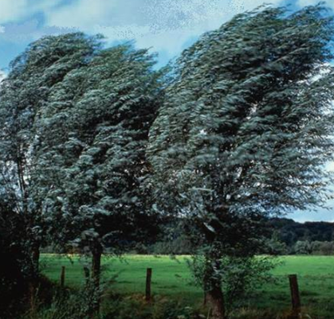

Figure showing a tree blown by a wind
Wind Vs Latitude
wind is defined as the movement of air in any direction. The speed of wind varies from calm to the very high speeds of hurricanes. Wind is created when air moves from areas of high pressure toward areas where the air pressure is low. Seasonal temperature changes and the Earth’s rotation also affect wind speed and direction.

A figure showing windspeed